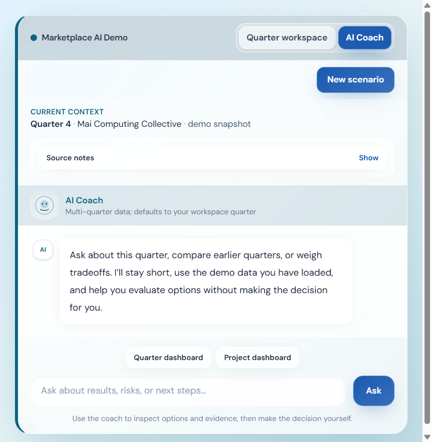
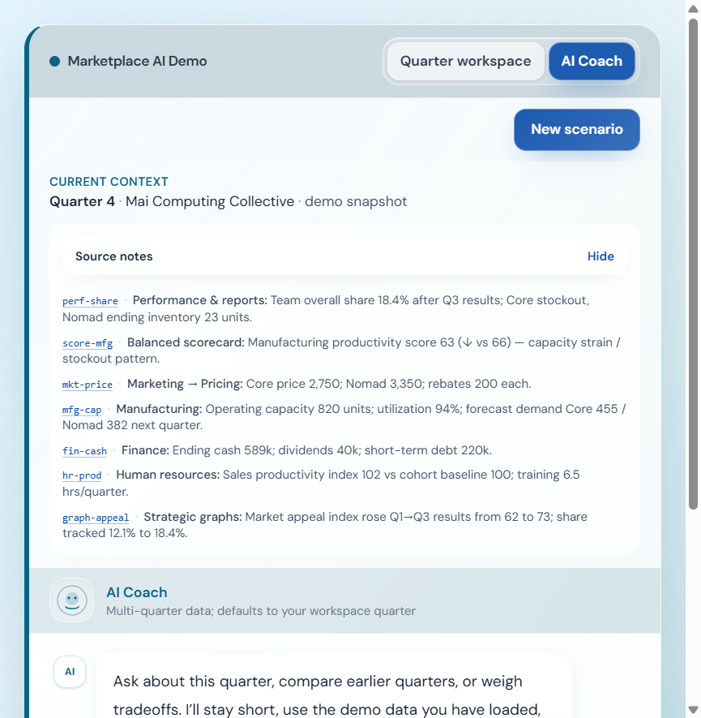
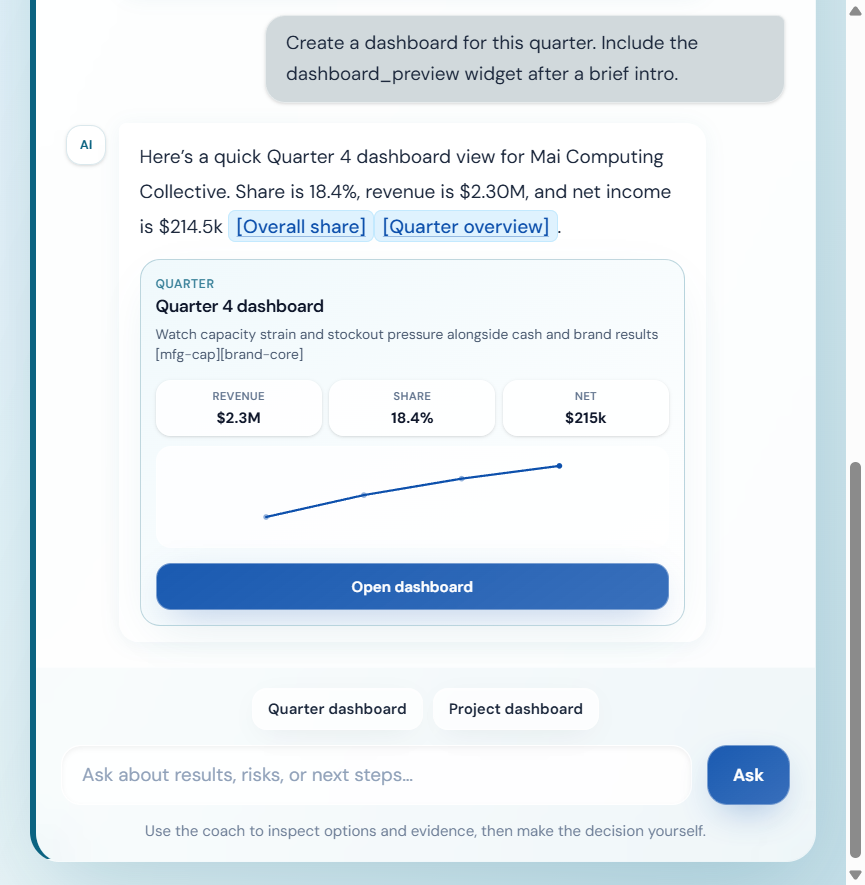
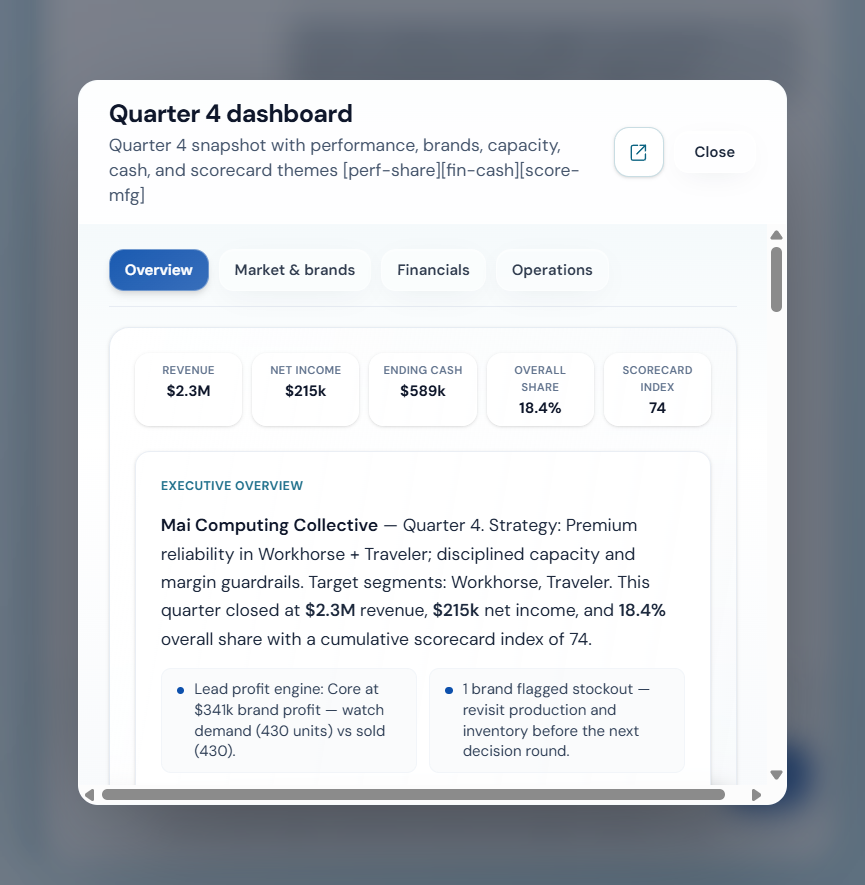
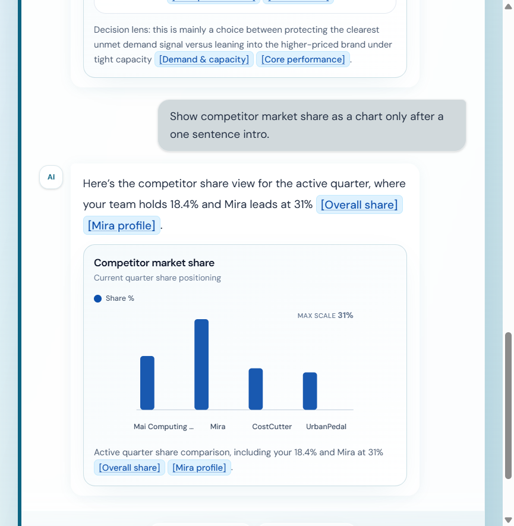
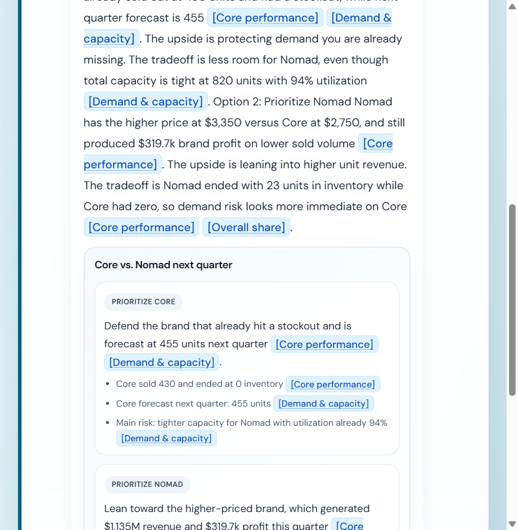
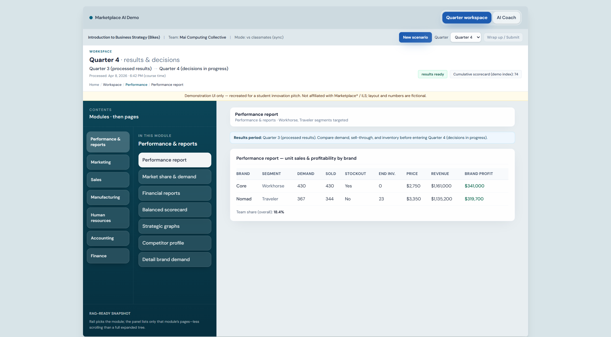

Marketplace Analyst
Round 1 submission for the Marketplace AI Competition. This proposal presents Marketplace Analyst as a grounded decision support layer for Marketplace style simulation performance and strategy.
This package goes a modest step beyond a text only answer: it already points to a live Vercel deployment you can click through, so the submission doubles as an early showcase of what the project looks like and how it behaves in a browser, not only as a written concept.
I am aware that Marketplace Simulations already ships an AI coach style experience inside its platform. What I am arguing here is that this design is a fuller and more helpful companion for the kind of work students do in the simulation: it is more visual, more flexible in how it presents evidence, and built to keep answers grounded in the quarter snapshot through citations and widgets, which can also make outcomes feel more accurate than a plain text chat alone for numeric, report heavy work.
1. How are businesses currently using this idea in the workforce?
Real teams already use a combination of structured operational data and language models when they need to move quickly on performance reviews, variance stories, competitive moves, capacity and demand risk, and questions about what changed before a planning or leadership meeting. The pattern is consistent even when the vendor stack changes. Dashboards and ERP style systems hold the truth, retrieval or tool calls keep the model tied to that truth, and the model adds short explanations, comparisons, and tradeoff framing so people can reach a better discussion faster without pretending the spreadsheet or report no longer matters.
That is the same muscle as an internal briefing where someone says here is what moved, here is what worries me, and here are two ways to read it, except the system can support the first draft and the follow up questions in real time. The role might sit in finance, operations, or strategy, but the underlying function is still interpretation and preparation, with humans responsible for the final decision. Marketplace Analyst is a student facing version of that practice. It helps the learner see the story in the data instead of outsourcing the strategy itself.
2. How could this type of AI be incorporated into a Marketplace simulation?
Marketplace Analyst is designed to live inside the student workflow between rounds. Instead of sending the student to a separate homework style chatbot, it places a coach beside the same reports they already need to interpret. A student can ask in ordinary language what matters for their team this quarter and receive short, grounded answers tied to the numbers already loaded for that run.
The coach opens with the active quarter and team already in context, which keeps the interaction specific to the student’s simulation state rather than generic business advice. It also exposes source notes that feel like a lightweight index of the key facts the assistant can reference from performance, manufacturing, finance, and scorecard views.

When those source notes are expanded, the student can immediately see that the experience is grounded in named facts and report areas rather than vague summaries. That makes the tool feel inspectable and accountable, which matters both pedagogically and practically.

From there the student can ask for an interpretation, a risk check, or a visual overview. In the current prototype, one tap can request a quarter dashboard inside the conversation so the reply becomes a compact briefing with revenue, share, net income, and a path to go deeper.

If the student wants more than a quick summary, the preview opens a richer dashboard layer with overview, market and brands, financial, and operations tabs. This makes the placement inside Marketplace easy to imagine. The assistant is not replacing the workspace. It is adding a guided readout beside the same KPI trail the course already rewards.



The other half of the experience is the workspace itself. Citations from chat are meant to land in the same module shell students already use, which reinforces that the coach is a voice layer on top of reports they still need to read, question, and defend.

In practice, students would use this after results post, during debrief, and before locking inputs. Across the term it reinforces evidence based reasoning for presentations and team defense in the same way a manager backs a recommendation with numbers in a real meeting.
3. What AI tools or applications could be used to support this idea?
The demonstration is built with a standard web stack so it is easy to host, inspect, and extend. The browser talks to one origin that serves the React interface and the API routes. On the server, the live snapshot is compiled into text, lightweight retrieval is run over that text for the user’s question, and OpenAI is called through a responses style flow with function tools wired to the same snapshot so KPI pulls are not invented in free text. Vercel runs the static build and the serverless handlers for chat and health while secrets stay off the client. None of that is exotic compared with what a university or vendor team could support in a pilot.
In practical terms, the system performs structured reads and plain language narration. It explains share, cash, manufacturing pressure, and scorecard movement, and when a chart or tradeoff panel is helpful, the interface renders that as a first class visual block instead of hiding the logic inside one long answer. What the student receives is readable language, optional visuals, and links that take them from an answer into the exact part of the workspace that holds the supporting evidence.
For learning, that fits the pattern of workplace analytics copilots tied to ERP or BI systems more closely than a novelty chatbot. The goal is not to print a single best strategy. The goal is to help students ask better questions, interpret the quarter more clearly, and defend their choices with evidence.
Feasibility
The idea is incremental by design. It attaches a coach UI to structured simulation state, adds retrieval and tool backed reads, and ships on standard hosting. That is a reasonable scope compared with building a fully autonomous agent that pretends to run an entire firm. The public demo lets reviewers click through the concept rather than imagine it from a wireframe alone.